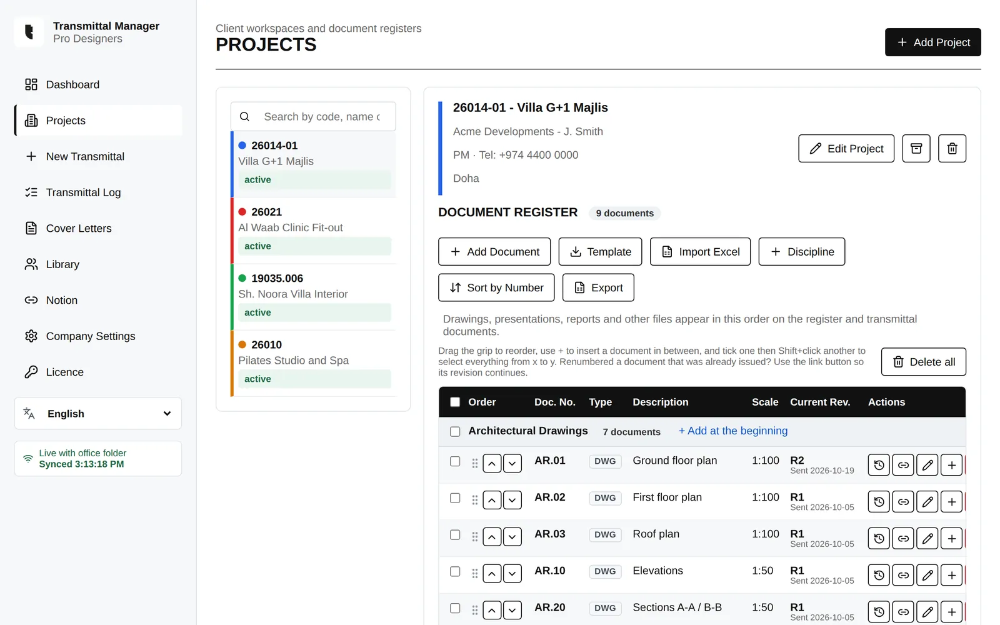
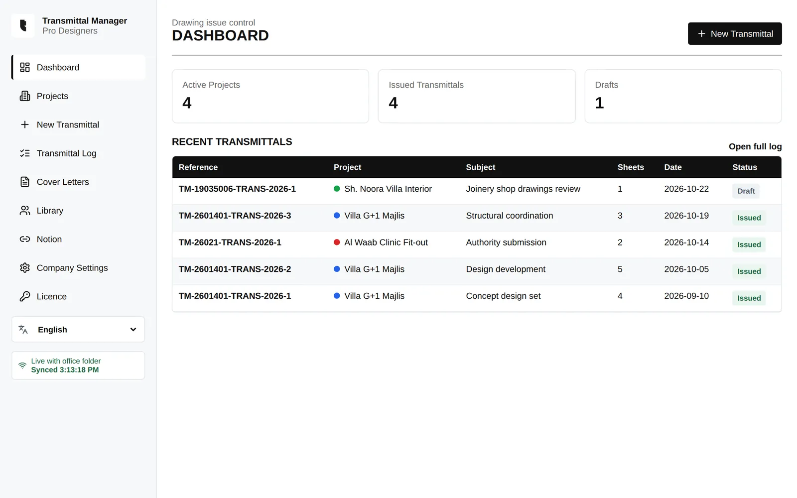
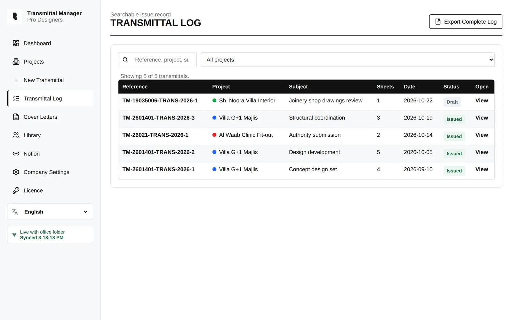
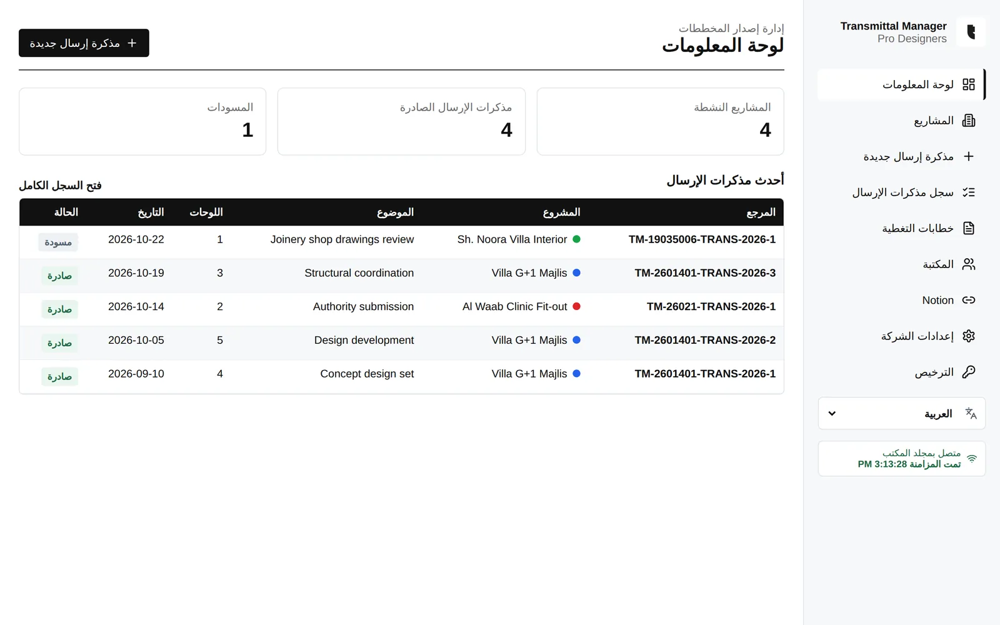
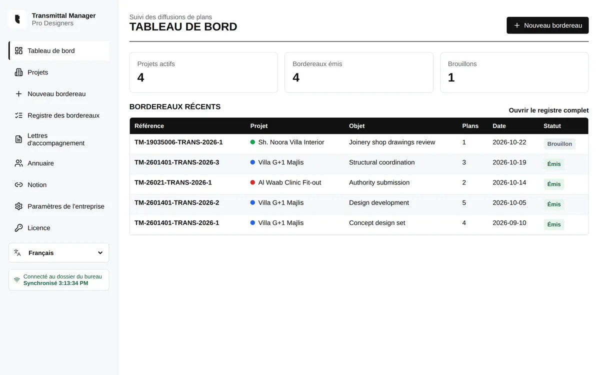
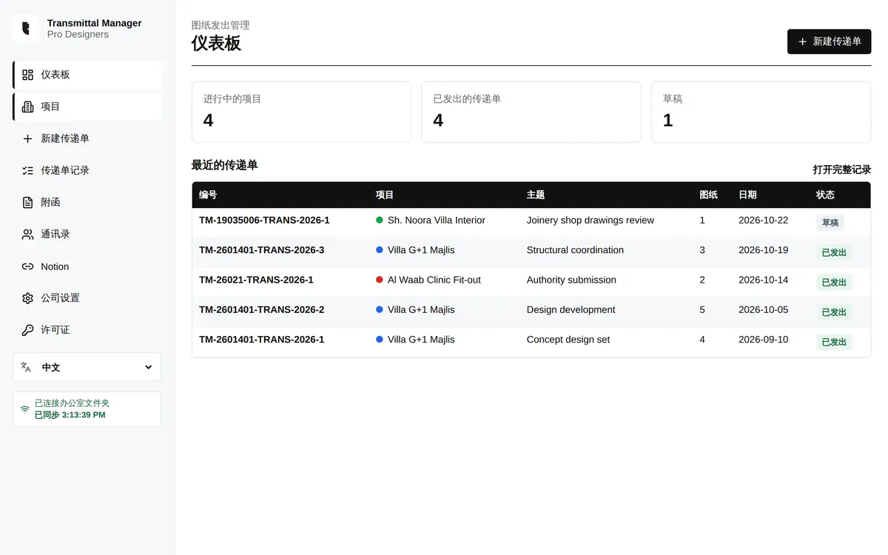
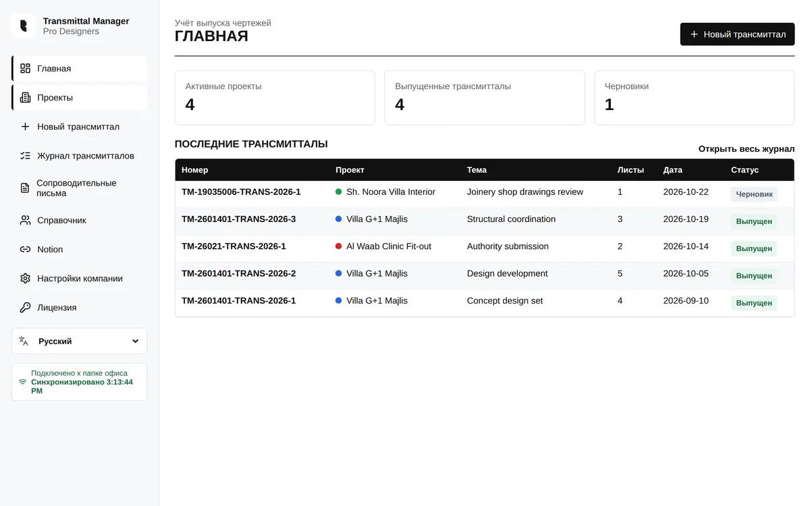

Drawing registers.
Drawings, reports and presentations grouped by discipline, each with its full revision history. Renumbered sheets keep their history.
REGISTERS · REVISION HISTORY · EXCEL IMPORTEvery drawing issue, on record. Drawing registers, four-step transmittals, cover letters and a searchable issue log in one desktop app for Windows and Mac.

Assemble, send and trace project documentation without a spreadsheet called FINAL_v2.
Drawings, reports and presentations grouped by discipline, each with its full revision history. Renumbered sheets keep their history.
REGISTERS · REVISION HISTORY · EXCEL IMPORTIssue a set in four steps: project, recipient, documents, preview. Export to Word, Excel and PDF with a QR link to the cloud package.
TRANSMITTAL WIZARD · WORD · EXCEL · PDFSearch every transmittal by project, subject or document. Export the complete log to Excel, or to Notion for your team.
ISSUE LOG · EXCEL · NOTIONPoint every PC at the same server folder and the whole team works on one register, synced within seconds.
SHARED FOLDER · LIVE SYNCDated copies on each PC, on the server and in an optional cloud folder, every 30 minutes and whenever the app closes.
3 LOCATIONS · LAST 60 COPIESBranded cover letters in English or Arabic, numbered and logged alongside the transmittals they accompany.
ENGLISH · ARABIC · PDFScreens from the app with sample projects.


Switch the whole interface between English, Arabic, French, Chinese and Russian. Arabic uses a full right-to-left layout. Exported documents stay in English for your clients.




Every feature, no credit card. Your projects stay on your computer or your office server.
Mac, first launch: unzip, drag Transmittal Manager to Applications, then right-click it and choose Open.
Upgrading: run the new installer over your current version. Projects, licence and settings are kept.